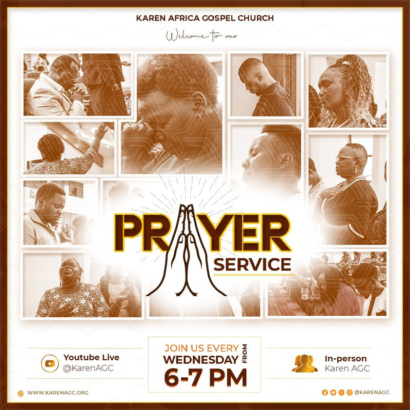
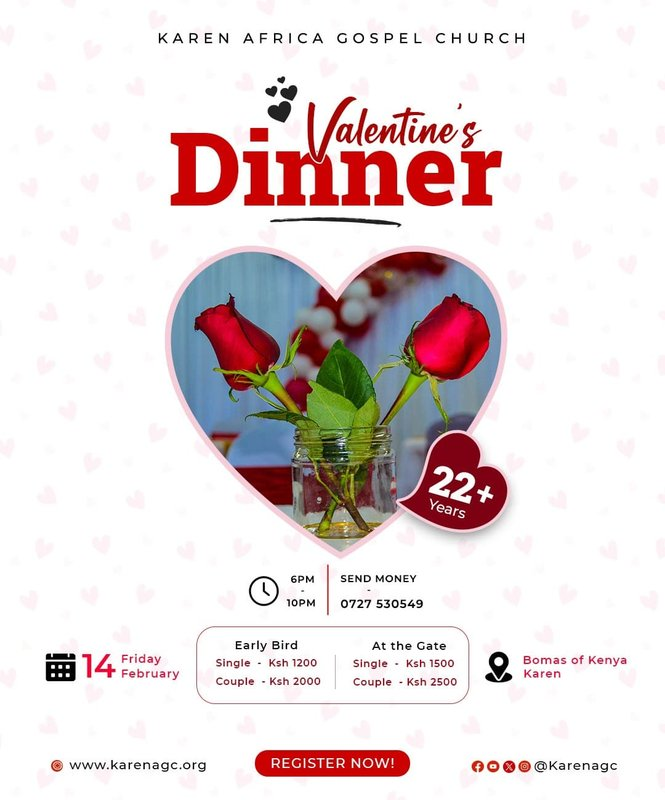
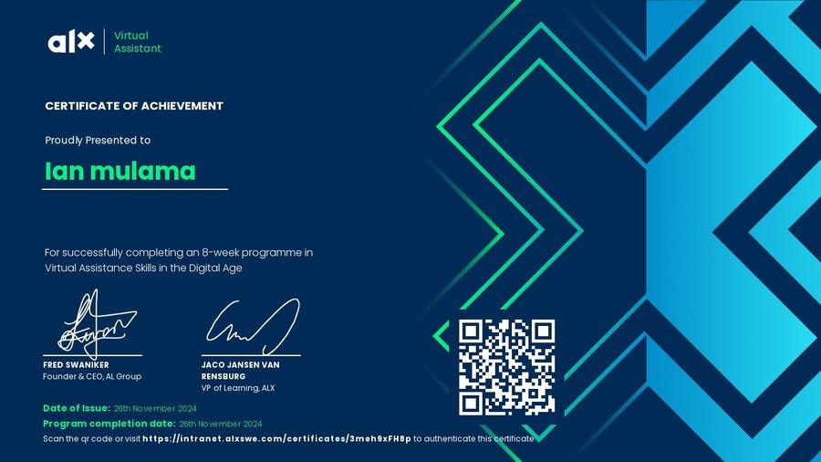

Welcome to My Portfolio
Explore my work and skills as a designer and developer.

Hi, I'm Ian Mulama, a creative designer and developer...
Web Developer | Designer | Video Editor
About Me
The Skillful Journey
Based in Nairobi, I am Ian Mulama — a multi-skilled professional working across education, design and digital media. I am a teacher trainee at Tangaza University specialising in History and Kiswahili, and I bring the same care to a classroom, a poster or an edit.
My teaching practice began at Nkaimurunya Comprehensive School in 2024, where I prepared schemes of work, delivered engaging lessons and adapted to diverse learning needs. Returning in early 2025, I deepened my classroom management, curriculum implementation and communication skills — building learning environments that are patient, purposeful and results-driven.
Beyond the classroom I served as a clerk with the Independent Electoral and Boundaries Commission during Kenya's 2022 General Elections, and I work on the media team at Karen Africa Gospel Church handling photography, video editing and poster design. Those roles taught me precision, confidentiality and how to tell a story visually. Let's collaborate to bring your vision to life.
- Disciplined, empathetic and innovative
- Clear communication with clients and teams
- Quality, integrity and confidentiality
- Continuous learning and teamwork
Poster Designs
Ignite Campus

Prayer Service
Kesha Overnight Worship Poster

Valentines Dinner
UN Career Exposition
Services I Offer
Graphic Design
I create eye-catching posters, social media graphics, and flyers tailored to your brand and message.
Web Design
Design responsive and user-friendly websites using HTML, CSS, and modern design principles.
Social Media Management
Manage your brand presence on platforms like Instagram and Facebook, including content creation and scheduling.
Business Automation
Streamline your business processes using automation tools to increase efficiency and productivity.
Teaching & Tutoring
Offer personalized tutoring in Kiswahili, History, and digital skills for learners of all levels.
Photography
Capture memorable moments and create stunning visual stories for your brand, events, or personal projects. I offer professional photography services including event coverage, portraits, product photography, and creative shoots—ensuring every image communicates your message with clarity and impact.
Achievements

The ALX program is a leading professional training initiative focused on empowering young Africans with in-demand digital, business, and virtual assistance skills. As a graduate of the ALX Virtual Assistant track, I have developed a robust foundation in supporting businesses and entrepreneurs remotely, ensuring productivity and efficiency in a digital-first world.
- Proficient writing
- Effective communication
- Technical proficiency
- Critical thinking abilities
- Accounting skills
- Time management expertise
- Organisational skills
- Customer service excellence
Virtual Assistance Services
As a skilled Virtual Assistant, I help busy professionals and businesses stay organized, productive, and focused on what matters most. Here’s how I can support you:

Gmail Management
Organize your inbox, filter important emails, respond promptly, and ensure you never miss a message.

Scheduling Meetings
Coordinate and schedule meetings, send invites, and manage reminders so your calendar runs smoothly.

Travel Planning
Research destinations, book flights and hotels, and create detailed travel itineraries for business or leisure.

Data Entry
Accurately input, organize, and maintain your business data in spreadsheets, CRMs, or databases.

Prepare Presentations
Create visually engaging PowerPoint or Google Slides presentations tailored to your needs.

Calendar Management
Maintain and update your calendar, set reminders, and ensure you stay on top of all appointments and deadlines.
References
Dennis Nderitu
A senior teacher and mentor during my teaching practice. He guided me on classroom management and effective lesson delivery.
Isaac Lemayanne
My supervisor at IEBC during the 2022 elections, whose leadership and attention to detail taught me the importance of accuracy and integrity in public service.
Rev. Jeff Cherry
Pastor at Karen Africa Gospel Church and my mentor in media ministry. He nurtured my creativity and spiritual leadership.